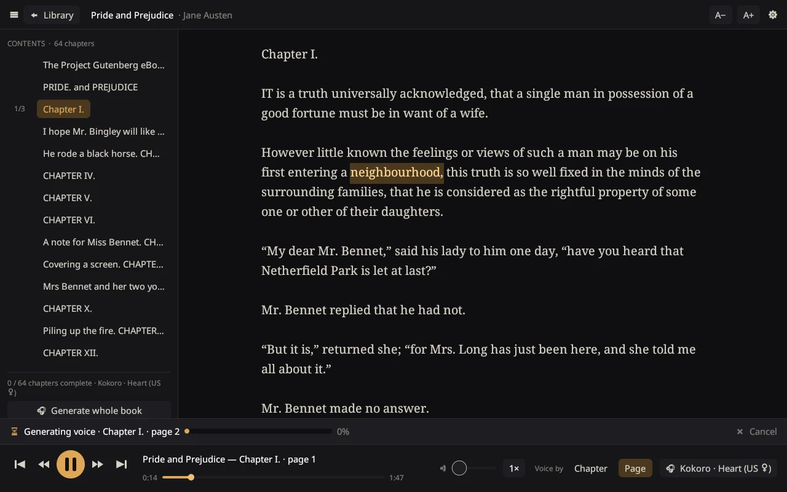

Windows
Windows 10 and 11, 64-bit. Installs for your user account only.
Download the installerPortable version (no installation, zip file)
It is a truth universally acknowledged, that a single man in possession of a good fortune, must be in want of a wife.
InkVoice turns your EPUB and PDF books into audiobooks, right on your own computer. No account, no cloud, no subscription.

Install InkVoice. It takes a few seconds and needs no administrator rights.
Pick a voice. InkVoice downloads it for you. The first voice needs about 400 MB; others are smaller.
Import a book and press play. EPUB and PDF both work. Your place is saved in every book.
Windows 10 and 11, 64-bit. Installs for your user account only.
Download the installerPortable version (no installation, zip file)
64-bit Intel and AMD. Paste this into a terminal:
curl -fsSL https://raw.githubusercontent.com/sabeel111/InkVoice/main/packaging/linux/get.sh | sh
Or download the .tar.gz archive and run ./install.sh.
macOS isn’t supported yet. You can build InkVoice from source or follow the project on GitHub.
Yes. InkVoice is open source under the MIT license, with no ads and no paid tier. The voices are free too; Underdog Woof may only be used for non-commercial purposes.
The warning appears because InkVoice isn’t code-signed yet, which costs money for a free project. Choose More info, then Run anyway. The installer is built in public from the source code on GitHub.
The first voice also installs a private copy of Python that InkVoice uses behind the scenes, about 400 MB in total. Each extra voice adds 40 to 125 MB. You can remove voices in Settings at any time.
No. The voices run on an ordinary processor, faster than they speak, so playback starts within seconds and keeps up while you listen.
EPUB books and PDFs that contain text. Scanned PDFs (pictures of pages) and books locked with DRM can’t be read.
No. Books, audio and settings stay on your computer. InkVoice only goes online to download the voices you choose.
On Windows, remove it in Settings, Apps like any other program. On Linux, run ./install.sh --uninstall from the downloaded archive. Your books and voices are kept in their own folder, so you can keep them or delete them.